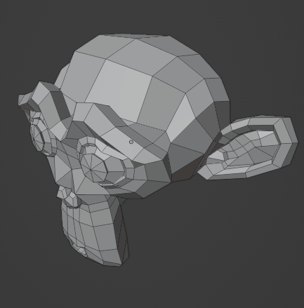
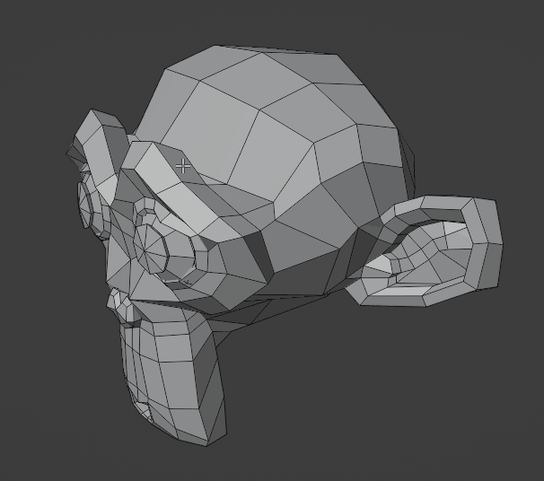
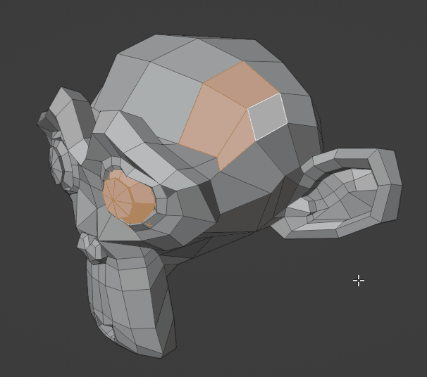
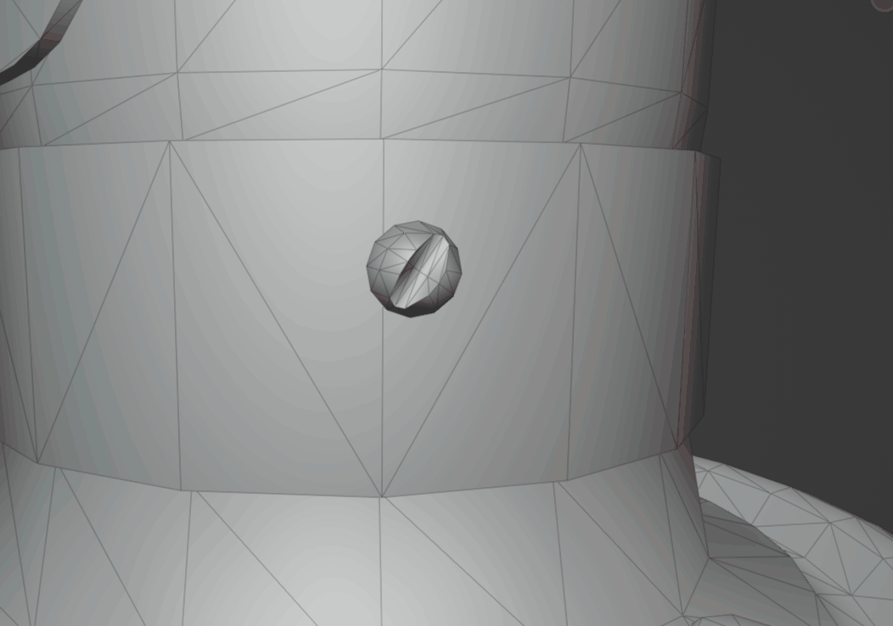
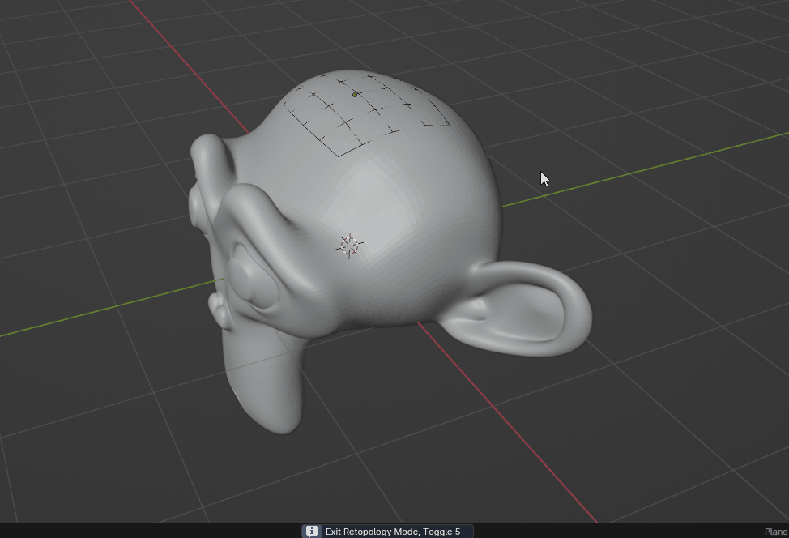

Industry Standard
Navigation and selection that work like Maya.
Double Click Select Island
Double-clickDouble-click to select an island or edge loop.


More info
| Shortcut | Action |
|---|---|
| Shift Double-click | Add to selection |
| Ctrl Double-click | Deselect |
Works on meshes, in the UV Editor and on curves.
Toggle in preferences: Select Island
Auto Delete
DeleteDelete without the menu.

More info
Edit Mode
- Dissolve Edge: dissolve instead of delete in edge mode.
- Confirm X: turn Blender's Object Mode delete confirmation on or off.
Toggle in preferences: Auto Delete
Maya Pivot
DMove and rotate the pivot in place, like Maya.

More info
- Behavior: Hold (default) or Toggle.
- Show Gizmo: show the pivot gizmo.
- Edit Mode support needs Experimental.
Toggle in preferences: Maya Pivot
Toggle Retopology
5One key for a full retopology setup. Press again to go back.

More info
Edit Mode
- Tool: any edit-mode tool, e.g. PolyQuilt or the Merge Tool.
- Theme: Maya, Blender Default or Custom Color. Snapping: vertex, face, face project, face nearest.
- The Toolkit panel also has New Retopology at Active.
Saving preferences while retopology is on can keep its theme colors. Use Reset Theme to Backup in the Toolkit panel.
Toggle in preferences: Retopology